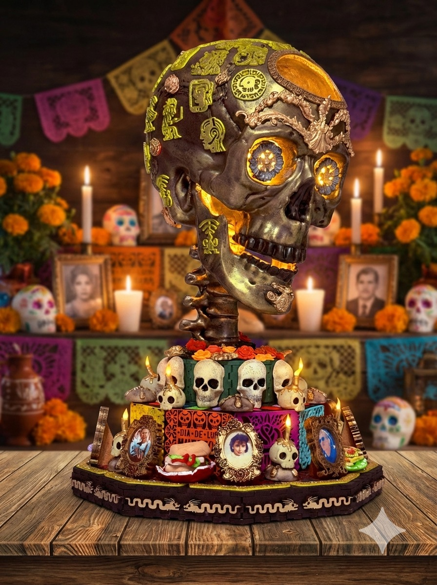
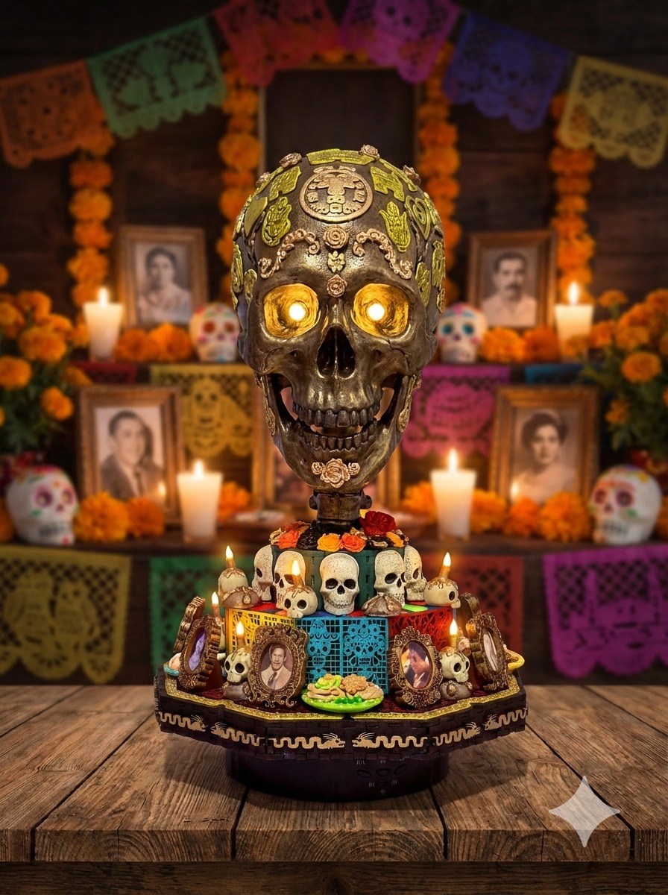
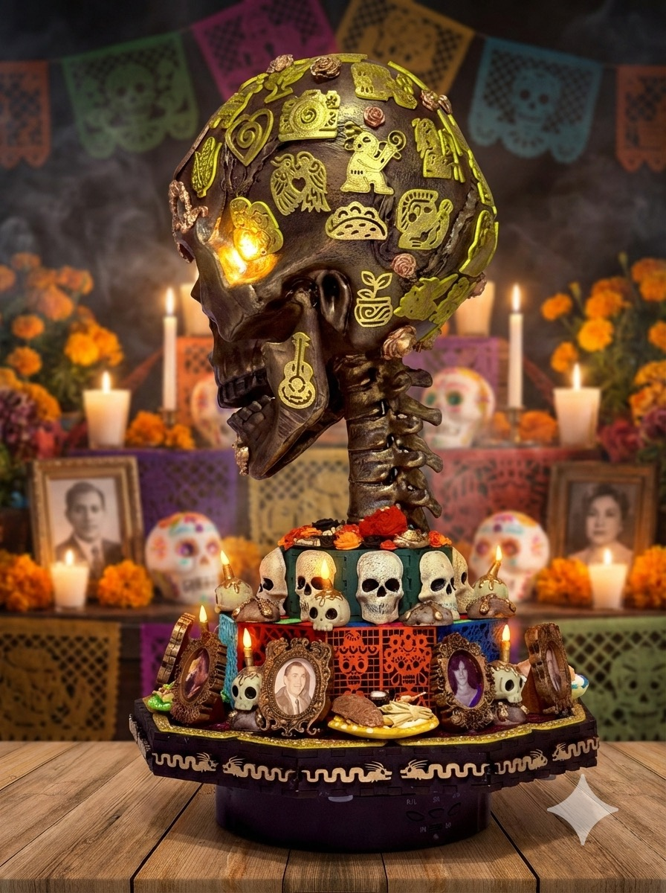

Una pieza de autor que explora la fascinante dualidad entre la existencia tecnológica y la esencia humana. A través de texturas que evocan el arte prehispánico y una estética de altar tradicional, esta obra celebra la convergencia de nuestras raíces ancestrales con la visión del futuro. Es una representación simbólica de cómo la vida y la muerte se entrelazan mediante la tecnología, recordándonos que dentro de cada uno de nosotros reside un universo vasto, donde los placeres cotidianos y la innovación digital coexisten en un ritual eterno.
Especificaciones
- Material: Resina, Fomy, Porcelana fria, PLA, madera, mdf, con detalles pintados a mano.
- Medidas: 40cm (alto) x 30cm (ancho).
- Alimentación: Adaptador de corriente 12V.
- Color de Luz: Blanca.


